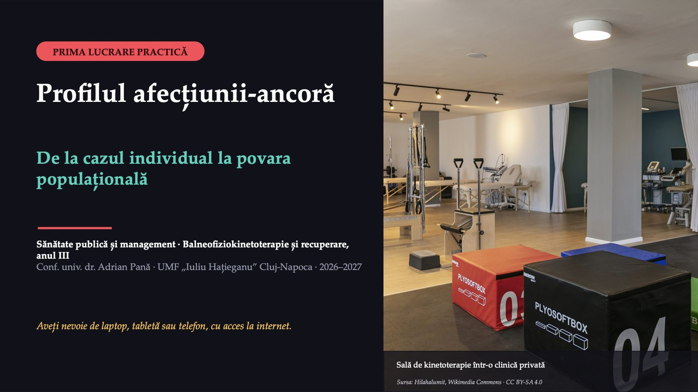
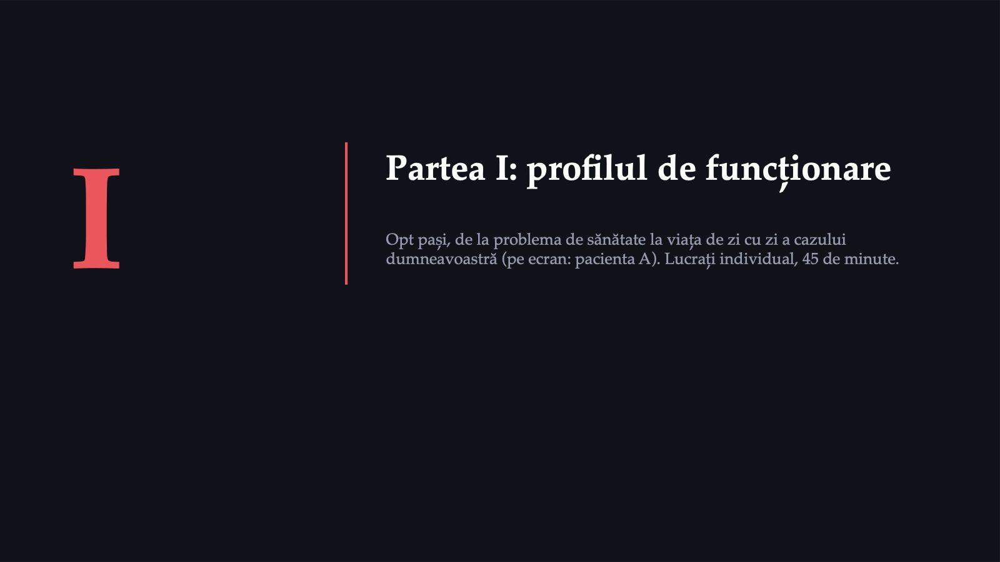
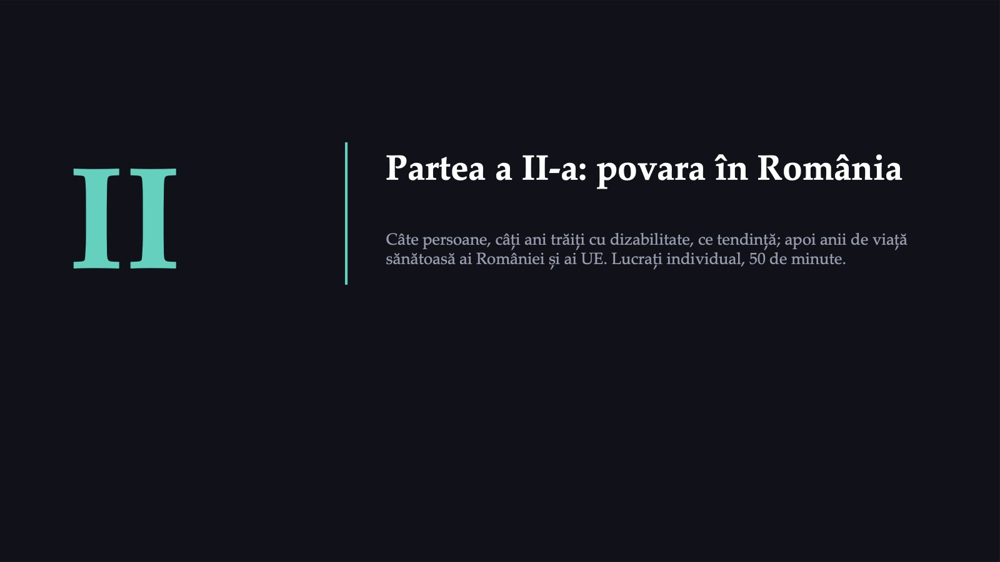
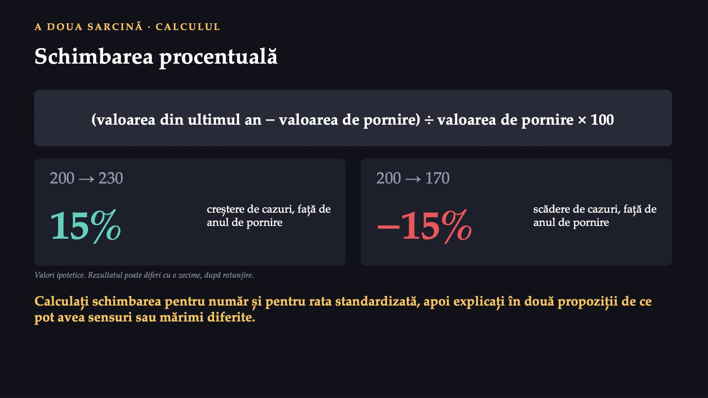
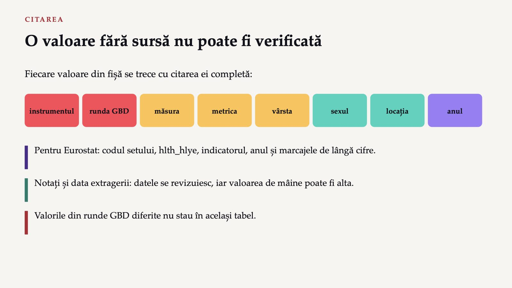
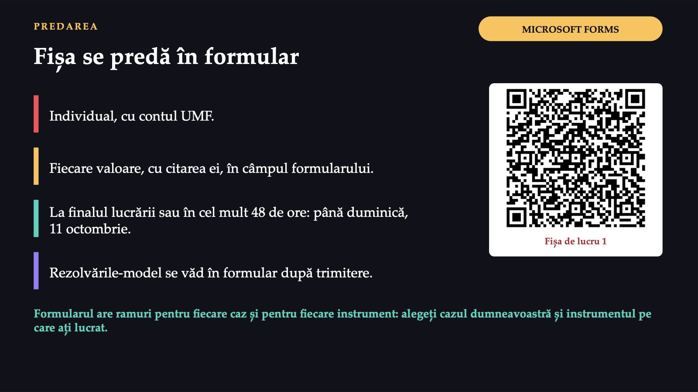
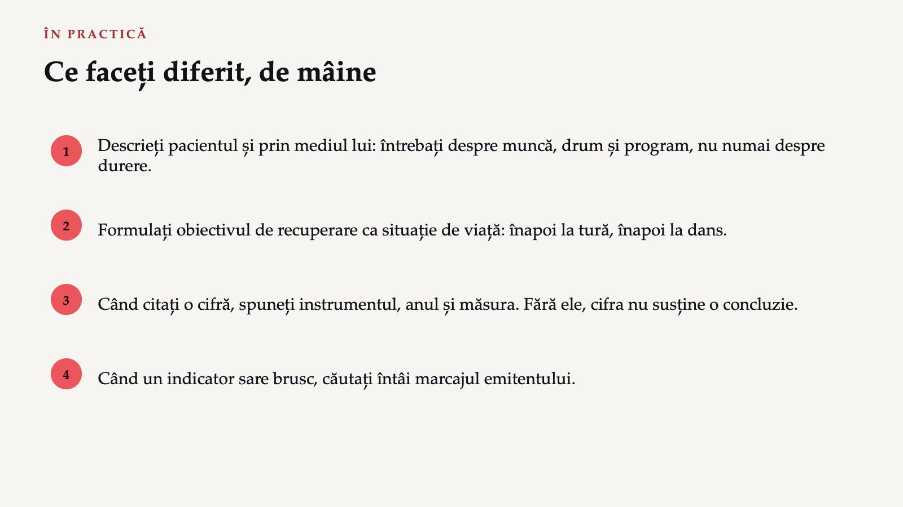
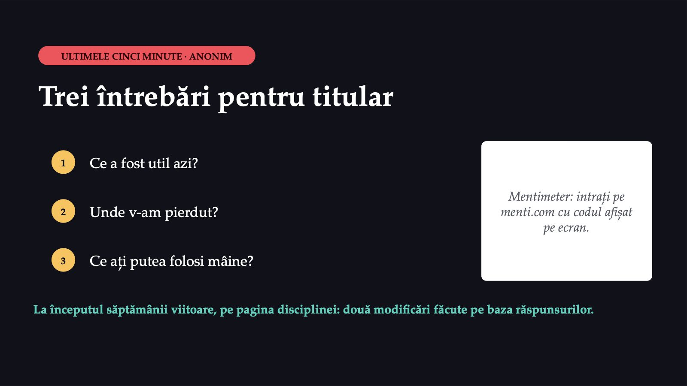

Profilul afecțiunii-ancoră

1 / 19Pacienta A: doi ani de durere
![O casă de marcat. Fără scaun. Sursa: Triplec85, Wikimedia Commons · CC BY-SA 4.0 CAZUL A · LOMBALGIA CRONICĂ, EXEMPLU PE ECRAN Pacienta A: doi ani de durere Cincizeci și doi de ani · operatoare de casă de marcat, ture de douăsprezece ore Durere lombară fără cauză specifică; crește după statul în picioare și o trezește uneori noaptea. Trei concedii medicale într-un an. La casa de marcat nu există scaun ajustabil. A renunțat la dansurile populare și evită mersul: se teme că mișcarea îi agravează boala. Recuperarea recomandată e în alt oraș, cu programul în timpul turelor ei. Caz construit în scop didactic; persoana nu există. Ce o oprește mai mult: durerea sau ce o înconjoară?](diapozitive/LP01/002.jpg) 2 / 19
2 / 19Aceeași afecțiune, de la două distanțe
![PARCURSUL DE AZI Aceeași afecțiune, de la două distanțe PARTEA I · PERSOANA Profilul de funcționare al cazului dumneavoastră (pe ecran: pacienta A): ce poate face, ce face efectiv și ce o ajută sau o împiedică. PARTEA A II-A · POPULAȚIA Câte persoane din România trăiesc cu afecțiunea dumneavoastră (pe ecran: lombalgia), câți ani trăiți cu dizabilitate produce și cum au evoluat valorile. deschiderea, 5′ profilul CIF, 45′ povara, 50′ discuția, 10′ exit ticket, 5′ Produsul: Fișa de lucru 1, completată individual și predată în formularul Microsoft Forms al lucrării.](diapozitive/LP01/003.jpg) 3 / 19
3 / 19Două instrumente, aceeași regulă
![ACCESUL LA DATE Două instrumente, aceeași regulă CU CONT IHME GBD Compare Afișează runda GBD 2023. Cere înregistrare și autentificare: contul se creează înaintea lucrării, din pagina instrumentului. FĂRĂ CONT WHO Rehabilitation Need Estimator Runda GBD 2021. Prevalența și anii trăiți cu dizabilitate pentru 27 de afecțiuni, pe anii 1990–2021. Valorile din cele două instrumente nu se compară și nu stau în același tabel: provin din runde diferite ale studiului GBD. Fără cont, lucrați pe instrumentul OMS.](diapozitive/LP01/004.jpg) 4 / 19
4 / 19I

5 / 19Opt pași, în această ordine
![METODA Opt pași, în această ordine 1 Problema de sănătate: diagnosticul, de când există, ce tratamente. 2 Funcțiile și structurile corpului: deficiențele, de exemplu durerea sau forța scăzută. 3 Activitatea: sarcinile concrete făcute cu dificultate. 4 Participarea: rolurile de viață afectate: munca, familia, recreerea. 5 Factorii de mediu, fiecare marcat ca barieră sau ca facilitator. 6 Factorii personali: vârsta, profesia, convingerile despre boală. 7 Alegerea: cele mai importante două bariere și două facilitatoare. 8 Obiectivul de recuperare, la nivelul participării: o situație de viață. Definițiile componentelor: notele cursului 1, modelul CIF. CIF are o singură listă; aici, activitatea = sarcina, participarea = rolul de viață.](diapozitive/LP01/006.jpg) 6 / 19
6 / 19În sală poate. Acasă face?
 7 / 19
7 / 19Profilul CIF al pacientei A
![LUCRU INDIVIDUAL · 45′ PRIMA SARCINĂ Profilul CIF al pacientei A Problema de sănătate Funcțiile și structurile corpului Activitatea Participarea Factorii de mediu (B sau F) Factorii personali Cele două bariere principale Cele două facilitatoare principale Obiectivul la nivelul participării Tabelul din Fișa de lucru 1 Cel puțin două elemente pe fiecare rând. Fiecare factor de mediu primește „B” (barieră) sau „F” (facilitator). În două sau trei propoziții: ce intervenție din afara sălii de recuperare i-ar schimba cel mai mult funcționarea? Două confuzii frecvente: o activitate trecută la funcțiile corpului; un factor personal trecut la factorii de mediu.](diapozitive/LP01/008.jpg) 8 / 19
8 / 19II

9 / 19Lombalgia, pe primul loc
![POVARA, ÎNAINTE DE CIFRE Lombalgia, pe primul loc Afecțiunile care pot beneficia de recuperare, în România, ordonate după anii trăiți cu dizabilitate 1 Lombalgia 2 Fracturile 3 Pierderea auzului 4 Artroza 5 Accidentul vascular cerebral Lungimile barelor sunt cele din estimările OMS. Valorile exacte, cu intervalul de incertitudine și citarea completă, le extrageți dumneavoastră. Toate cele trei afecțiuni-ancoră apar aici; fractura de șold se caută în grupul fracturilor. Sursa: WHO Rehabilitation Need Estimator (IHME, GBD 2021), România, ambele sexe, toate vârstele, ani trăiți cu dizabilitate (număr); date extrase la 27.09.2026.](diapozitive/LP01/010.jpg) 10 / 19
10 / 19Trei cifre și o tendință
![CE SE EXTRAGE Trei cifre și o tendință Numărul Volumul nevoii de servicii: câte persoane trăiesc cu afecțiunea. Rata standardizată pe vârstă Compară anii ca și cum structura pe vârste ar fi aceeași. Intervalul de incertitudine Arată cât de precisă este estimarea. Se cere pentru ratele standardizate. Tendința: primul an al seriei, 1990, și ultimul an disponibil, pentru prevalență și pentru anii trăiți cu dizabilitate. Numărul și rata pot evolua în sensuri diferite. De ce: întrebarea sarcinii a doua.](diapozitive/LP01/011.jpg) 11 / 19
11 / 19Aceleași cifre, două drumuri
![PAȘII Aceleași cifre, două drumuri GBD Compare, cu cont 1 Intrați în cont. 2 Setări: măsura (întâi YLD), metrica (întâi numărul), toate vârstele, ambele sexe, România, ultimul an. 3 Treemap: afecțiunea în ierarhia cauzelor (lombalgia: musculo-scheletale; AVC: cardiovasculare; fractura de șold: „Falls”, traumatisme). 4 Valoarea și intervalul de incertitudine. 5 Metrica rată; rata standardizată, dacă panoul o oferă; apoi prevalența. 6 Vederea în timp: primul și ultimul an. WHO Rehabilitation Need Estimator 1 Locația „Romania”, sexul „Both”, anul. 2 Măsura: prevalență sau ani trăiți cu dizabilitate. 3 Metrica: număr sau rată; vârsta: toate sau standardizată. 4 Afecțiunea, aleasă din categorii (AVC: „Neurological disorders”; fracturile: „Musculoskeletal disorders”, toate fracturile). 5 „Show uncertainty”: intervalul de incertitudine. Etichetele panoului GBD Compare pot diferi ușor de cele de aici.](diapozitive/LP01/012.jpg) 12 / 19
12 / 1915%

13 / 19România și UE, cu marcajele emitentului
![A TREIA SARCINĂ · EUROSTAT hlth_hlye România și UE, cu marcajele emitentului 1 Căutați codul setului: hlth_hlye. 2 Anii de viață sănătoasă la naștere, „Total”, România și EU27_2020. 3 Ultimul an publicat și anul precedent, cu marcajele de lângă cifre. Anii de viață sănătoasă: anii trăiți fără limitări ale activităților obișnuite din cauza unei probleme de sănătate. b ruptură de serie e valoare estimată p valoare provizorie Un salt brusc marcat „b” se tratează întâi ca schimbare de metodă, abia apoi ca schimbare a sănătății. Formulați o constatare despre România față de UE și o limită a datelor pe care se sprijină.](diapozitive/LP01/014.jpg) 14 / 19
14 / 19O valoare fără sursă nu poate fi verificată

15 / 19Fișa se predă în formular

16 / 19Două imagini, un singur plan
 17 / 19
17 / 19Ce faceți diferit, de mâine

18 / 19Trei întrebări pentru titular

19 / 19Săgeți sau spațiu: navigare · O: vedere de ansamblu · N: notele prezentatorului · F: ecran complet · Esc: închidere